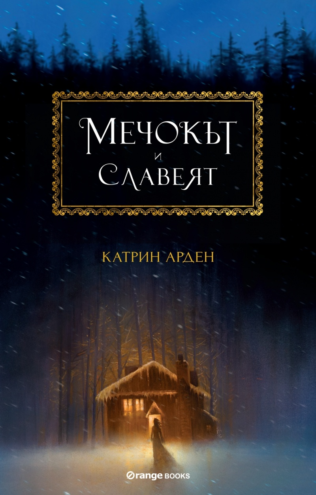

Да, тази зима в книжният пазар наистина се появиха страхотни издания. Вълнуващи и важни книги с впечатляващи оформления.
Истинско изкушение. Едно от тях е романът „Мечокът и Славеят“ на американската писателка Катрин
Арден.Той е подходящ за всички романтици и приключенци, които искат да изживеят зимата по най-приказния
начин. Красивият език, магическата история, напомняща руска приказка, и топлината, които ще срещнете
в нея, ще ви усмихнат и сгреят.
„Мечокът и славеят“ е универсален магически роман, в който ще се влюбят хора от всяка възраст. Луксозното му оформление го
прави още по-подходящ за подарък.
В прегръдките на руската пустош зимата трае цяла вечност, а снежните преспи са по-високи от къщите. Но на Василиса това не
ѝ пречи. Тя прекарва вечерите сгушена около топлината на огъня, обградена от обичните си близки,
докато слуша приказките на бавачката си. Любимата ѝ приказка е за Мраз – синеокия зимен демон,
който се появява в ледените зимни вечери, за да отведе непредпазливите души. Бавачката разказва,
че мъдрите хора се боят от него и че почитането на духовете предпазва дома им от зло.
След като майката на Василиса умира, баща ѝ отива в Москва и се връща с нова съпруга. Тя ненавижда селските порядки и забранява
почитането на духовете. Всички смирено се съгласяват, но Василиса е ужасена, защото усеща, че това
ще донесе само нещастия.
И се оказва права – реколтите загиват, зли същества от гората започват да се приближават и нещастие се настанява в селото.
През това време мащехата на Василиса става все по-сурова с нея.
Опасността приближава и Василиса трябва да се противопостави дори на близките си, като призове опасни дарби, които дълго
е потискала. Възможно ли е най-страшните приказки на бавачката всъщност да се окажат реалност?
„Мечокът и Славеят“ е една от книгите, които стопроцентово заслужават вниманието ви тази зима!